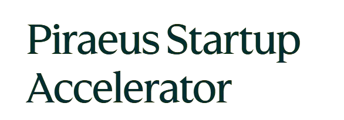
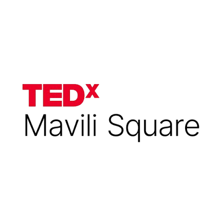
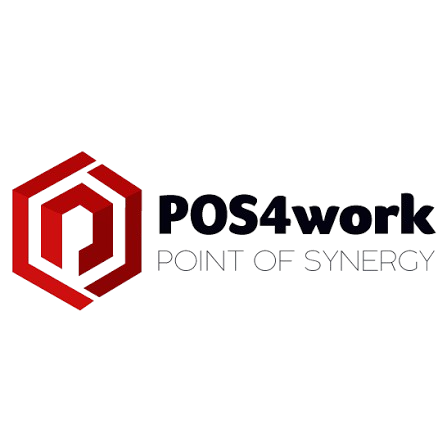
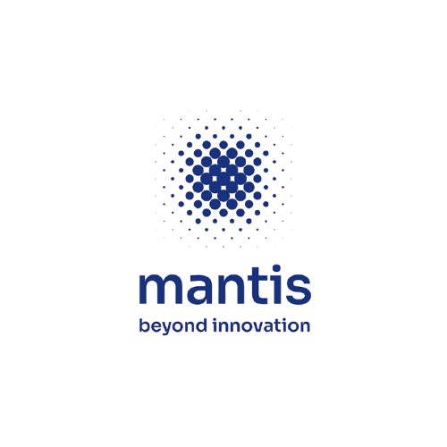

Για επιχειρήσεις
Χτίζω websites & εφαρμογές που δουλεύουν σωστά από την πρώτη μέρα
Backend engineer με εμπειρία σε production συστήματα. Δουλεύω με επιχειρήσεις και ομάδες που θέλουν ένα προϊόν έτοιμο για πραγματικούς χρήστες, όχι ένα πρόχειρο MVP.
Πώς δουλεύω:
- Backend engineer, εστιασμένος σε distributed systems
- Έχω παραδώσει websites & εφαρμογές για πελάτες και δικά μου projects
- Γράφω templates και checklists που χρησιμοποιώ ο ίδιος σε production
- Πιστεύω ότι τα πολύπλοκα πράγματα εξηγούνται απλά
Trusted by





Διαδικασία
Πώς δουλεύουμε μαζί
Ξεκάθαρη διαδικασία, χωρίς περιττά βήματα.
01
Discovery call
Μου λες τι χρειάζεσαι. Σου λέω αν μπορώ να βοηθήσω και πώς χωρίς δέσμευση.
02
Πρόταση & πλάνο
Λαμβάνεις ξεκάθαρο scope, timeline και κόστος πριν ξεκινήσουμε.
03
Ανάπτυξη & παράδοση
Χτίζω, σε κρατάω ενήμερο σε κάθε βήμα και παραδίδω production-ready.